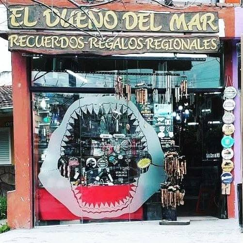

El Dueño del Mar es de esos lugares a los que siempre dan ganas de volver. Entrás, mirás con calma, encontrás algo lindo y te llevás un recuerdo que queda para siempre.
Recuerdos · Regalos · Regionales
Un clásico de Santa Clara del Mar para llevarte un recuerdo con historia.
En nuestro local vas a encontrar mates, cuchillos, madera, caracoles, decoración y regalos con ese aire de mar que hace único a Santa Clara. Te esperamos como siempre, a metros de la rotonda y con la atención cálida de sus dueños.

La tienda
Una parada obligada para quienes pasean por Santa Clara.
Atendido por sus dueños
Nos gusta recibir a cada persona con cercanía, buena onda y ese trato simple que hace sentir al visitante como en casa.
Un clásico local
Nuestra fachada ya es parte del paisaje del centro. Quienes pasan por Santa Clara la reconocen enseguida y saben que acá siempre hay algo para descubrir.
Variedad para regalar y regalarse
Desde detalles costeros hasta piezas más clásicas, elegimos objetos con personalidad para que cada compra tenga algo especial.
Qué encontrás
Todo eso que hace especial una vuelta por la costa.
Recuerdos costeros
Caracoles, detalles marinos y objetos que guardan el espíritu del mar.
Regalos con carácter
Opciones originales para sorprender o llevarte algo distinto de tus vacaciones.
Regionales
Productos con raíz local y ese toque artesanal que nunca pasa de moda.
Mates, cuero y cuchillos
Una de las categorías más buscadas por quienes quieren llevarse algo bien argentino.
Madera y chopería
Piezas nobles, de estilo rústico, ideales para regalar o sumar a tu casa.
Decoración
Objetos que siguen trayendo un poco de costa a tu casa después del viaje.
Por qué elegirnos
Un lugar para mirar tranquilo, encontrar algo lindo y llevarte un buen recuerdo.
Un local pensado para el turista, con atención cercana y ese estilo que ya es parte de Santa Clara del Mar.
Buena atención
Nos importa que cada visita sea amable, simple y con tiempo para elegir tranquilo.
Mucha variedad
Siempre hay algo distinto para regalar, decorar o llevarte como recuerdo del viaje.
Ubicación ideal
Estamos a metros de la rotonda, en una zona de paso perfecta para sumar una visita.
Visítanos
Pasá por el local y encontrá ese detalle que te va a hacer acordar al mar.
Redes
Seguí la tienda
Descubrí novedades, fotos del local y algunos de los productos que más gustan.